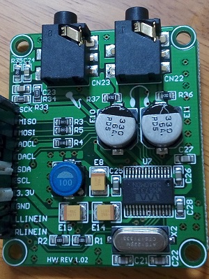

WM8731 設定メモ
2017年04月27日 カテゴリー：Raspberry Pi

WM8731が搭載されているI2SオーディオインターフェイスMikroElektronika MIKROE-506を試してみたので、設定をメモしておきます。写真の通り、現在はLINE INも使えるようになっています。
↓参考ページ
I2SオーディオI/F WM8731をraspberry piで鳴らす
PIAiF Raspberry Pi i2s ”IN-OUT” AudioInterFace
接続は、上記PIAiFの回路図の通りで問題ありませんでした。
＜Raspberry Pi 3の設定＞
$ sudo nano /boot/config.txt
#dtparam=audio=on （コメントアウトしてオンボードのオーディオをオフに）
dtoverlay=rpi-proto （追加記載）
alsa-base.confファイルをすでに作っていた場合は、内容を書き換えます。
$ sudo nano /etc/modprobe.d/alsa-base.conf
options snd slots=snd_soc_rpi_proto
options snd_soc_rpi_proto index=0
再起動し、オーディオ認識を確認します。
$ aplay -l
入出力の音量は同じではありませんが、とりあえずテストしたときの設定は下記のようになります。マイク入力部コンデンサC23の値が1nFしかありませんので、LINE INを利用しました。
$ alsamixer
全て表示 F5
Master 100 [dB gain: 6.00, 6.00]
Master Playback ZC [Off, Off]
Sidetone 0 [dB gain: -15.00]
Line CAPTURE
Mic [Off]
Mic Boost 0 [dB gain: 0.00]
Mic Boost 0 [dB gain: 0.00]
Playback Deemphasis [Off] （オンにすると高域が削られる）
Capture 40 [dB gain: -6.00, -6.00]
ADC High Pass Filter オン （オフにすると高域の雑音が増える）
Input Mux [Line In]
Output Mixer HiFi オン
Output Mixer Line Bypass [Off]
Output Mixer Mic Sidetone [Off]
Store DC Offset [Off]
＜Pure Dataの設定＞
$ nano .pdsettings
audioindevname1とaudiooutdevname1の行は削除、下記該当箇所を変更しました。
audioindev1: 0 2
audiooutdev1: 0 2
audiobuf: 2
rate: 48000
blocksize: 32
ここまで値を小さくしても音切れはないようで、レイテンシーは5msととても優秀でした。もうUSBオーディオインターフェイスには戻れそうにありません。